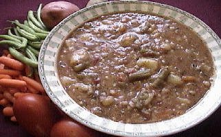

VEGETABLE BARLEY STEW
- 10 CUPS POTATOES - CUT INTO 2 INCH CUBES
- 3 CUPS ONIONS - FINELY CHOPPED
- 2 CUPS GREEN BEANS - CUT INTO 1 INCH PIECES
- 2 CUPS TOMATOES - PEELED AND CHOPPED, OR CANNED CRUSHED TOMATOES
- 1 CUP CELERY - FINELY CHOPPED
- 1 CUP GREENS (your choice) - CHOPPED
- 1 1/2 CUP CARROTS - THINLY SLICED & CUBED
- 1/2 CUP PEARLED BARLEY - UNCOOKED, RINSED
- 1/2 CUP OLIVE OIL
- 1/4 CUP FRESH PARSLEY - FINELY CHOPPED (2 1/2 Tbs. dried)
- 8 CLOVES GARLIC - MINCED (approx. 2 Tbs.)
- 2 WHOLE BAY LEAVES
- 1 TBS. DRIED OREGANO
- 1/2 TBS. DRIED BASIL
- 1 PINCH CAYENNE POWDER
- 1 PINCH CELERY SEED
- SALT AND PEPPER TO TASTE
IN A LARGE SOUP PAN, PLACE 4 QUARTS OF WATER, THE CELERY, CARROTS, ONIONS, TOMATOES, PARSLEY, AND THE BAY LEAVES. SIMMER OVER MEDIUM-HIGH HEAT, UNCOVERED, WHILE PREPARING THE OTHER INGREDIENTS. WHEN THE CARROTS HAVE BECOME TENDER (ABOUT AN HOUR), REMOVE THE BAY LEAVES, THEN ADD BARLEY, GARLIC, GREENS, AND OTHER SPICES EXCEPT SALT AND PEPPER. SIMMER FOR 30 MINUTES, ADD GREEN BEANS AND OLIVE OIL, AND CONTINUE TO SIMMER, OVER MEDIUM-HIGH HEAT, STIRRING OCCASIONALLY.
MEANWHILE, PLACE THE POTATOES IN A MEDIUM SOUP POT WITH JUST ENOUGH WATER TO COVER. COOK UNTIL VERY TENDER AND MOST OF THE LIQUID HAS EVAPORATED. ADD THE POTATOES WITH THE LIQUID TO THE SOUP WHEN THE BEANS AND GREENS ARE TENDER. COOK OVER MEDIUM HEAT UNTIL THE STEW BECOMES AS THICK AS YOU DESIRE. ADD MORE WATER IF NEEDED. STIR CONSTANTLY - THE THICKENED STEW WILL BURN EASILY. ADD SALT, PEPPER, AND ADDITIONAL SEASONINGS TO TASTE.
NOTE: YOU CAN ADD COOKED, CHOPPED, VEGETARIAN SOY BURGER OR SOY SAUSAGE PATTIES JUST BEFORE SERVING. GRATED PARMESAN CHEESE OR FRESHLY CHOPPED PARSLEY MAKE DELICIOUS ADDITIONS.
NOTE:: IF YOU CHOOSE TO USE HULLED BARLEY INSTEAD OF PEARLED, COOK 1/2 CUP IN A PRESSURE COOKER AS DIRECTED. THEN ADD THE COOKED BARLEY AND LIQUID TO THE STEW WHEN ADDING THE POTATOES. FURTHER DIRECTIONS FOR USING A PRESSURE COOKER CAN BE FOUND AT THIS LINK.
MAKES APPROX. 6 SERVINGS.